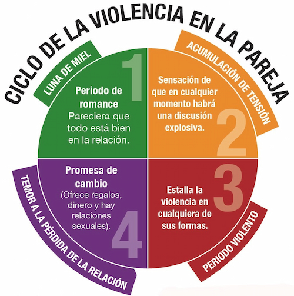

SEÑALES DE ALERTA
Detectemos los primeros signos de la violencia
Si crees que estás en situación de violencia, puedes llamar a la línea de contención 144. Las 24hs, los 365 días del año.
Signos de violencia "invisibles":
- No expresas tus opiniones libremente por miedo a la reacción de otra persona
- Te muestran celos frecuentemente y/o te revisan el celular
- Has dejado de salir con tu círculo de amistades porque a otra persona “no le caen bien”
- Te aíslan de familiares y/o amistades
- Ignoran o desprecian tus sentimientos con frecuencia
- Te controlan el dinero y toman las decisiones por ti
Signos de violencia más visibles:
- Te humillan, gritan o insultan en privado o en público
- "Juego" de manos: pellizcones, tirones de pelo, empujones, patadas o cachetazos aunque sean "jugando"
- Amenazan con hacerte daño a ti o a tu familia
- Te han agredido alguna vez físicamente
- Te han forzado a mantener relaciones sexuales en contra de tu voluntad
- Amenazan con quitarte a tus hijos/as en caso de dejarlo
Ciclos de la Violencia

El ciclo de la violencia es una herramienta que te ayuda a detectar si estás viviendo una situación de riesgo en tu relación de pareja. Las fases del ciclo en cada caso pueden variar en tiempo e intensidad; a mayor tiempo, más cortos se vuelven los ciclos.
Signos de violencia en el trabajo:
- Te asignan tareas que no te corresponden y son humillantes
- Te ignoran en reuniones importantes
- Recibes comentarios despectivos o humillantes
Signos de violencia en el entorno escolar:
- Te acosan físicamente o verbalmente
- Te excluyen de actividades grupales
- Recibes amenazas o intimidaciones